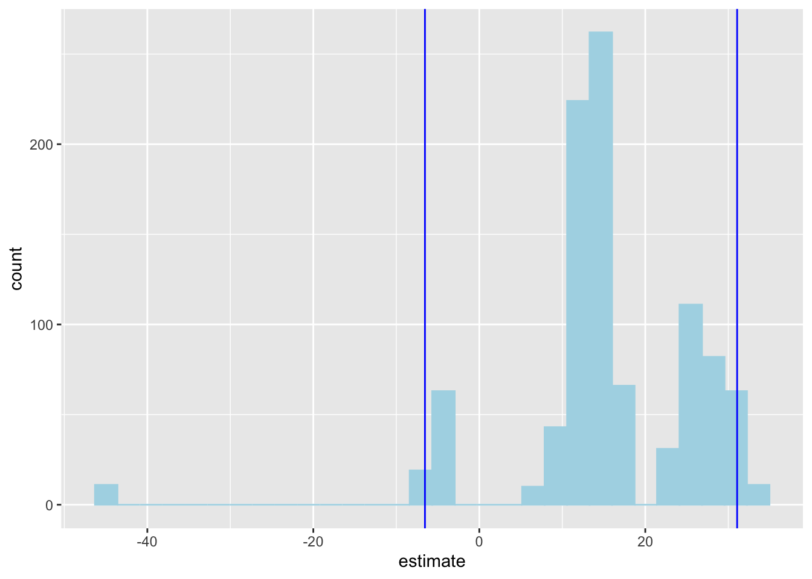
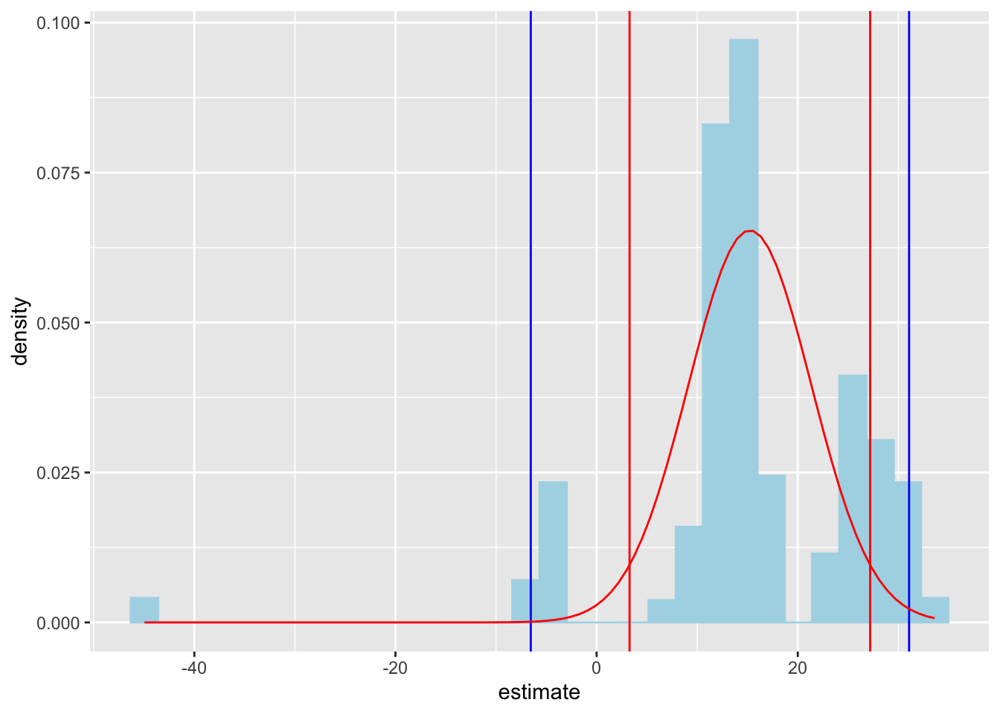
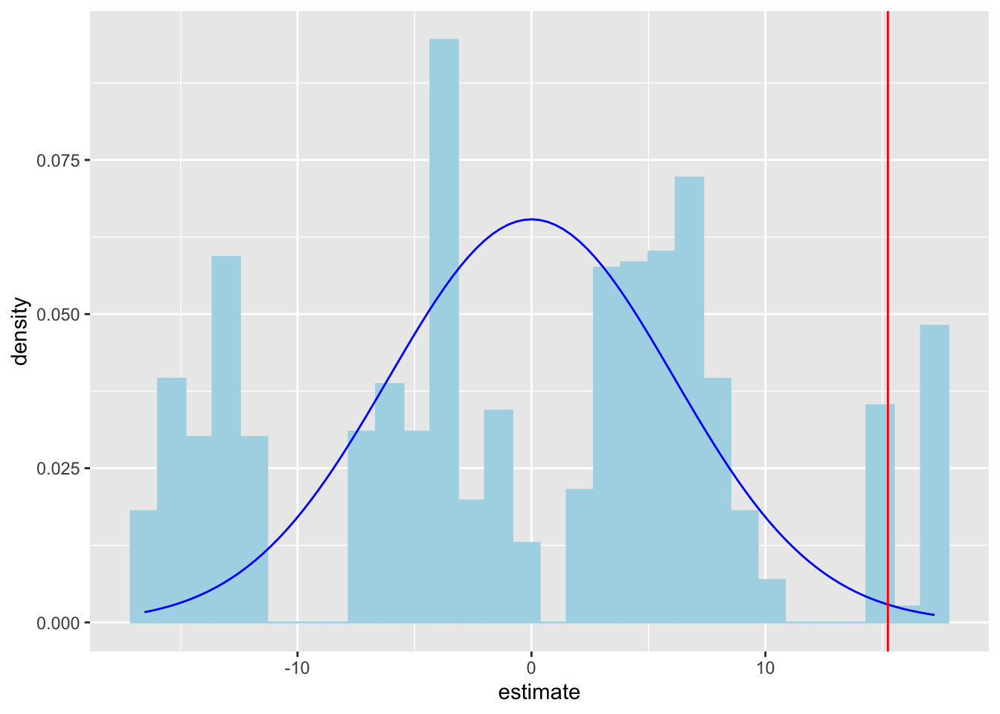

AE 13: more Pokemon
Today we’ll explore the question “Are taller Pokémon speedier than shorter Pokémon?”
Packages
Data
The data for this application exercise was originally gathered using the Complete Pokémon Dataset from Kaggle.
First, let’s load the data:
pokemon <- read_csv("data/pokemon.csv")We are interested in whether a Pokémon’s log height (measured in meters) can predict its speed (how fast it is), so let’s add that new variable:
Rows: 924
Columns: 18
$ name <chr> "Bulbasaur", "Ivysaur", "Venusaur", "Mega Venusaur", "…
$ generation <dbl> 1, 1, 1, 1, 1, 1, 1, 1, 1, 1, 1, 1, 1, 1, 1, 1, 1, 1, …
$ type_1 <chr> "Grass", "Grass", "Grass", "Grass", "Fire", "Fire", "F…
$ type_2 <chr> "Poison", "Poison", "Poison", "Poison", NA, NA, "Flyin…
$ height_m <dbl> 0.7, 1.0, 2.0, 2.4, 0.6, 1.1, 1.7, 1.7, 1.7, 0.5, 1.0,…
$ weight_kg <dbl> 6.9, 13.0, 100.0, 155.5, 8.5, 19.0, 90.5, 110.5, 100.5…
$ total_points <dbl> 318, 405, 525, 625, 309, 405, 534, 634, 634, 314, 405,…
$ hp <dbl> 45, 60, 80, 80, 39, 58, 78, 78, 78, 44, 59, 79, 79, 45…
$ attack <dbl> 49, 62, 82, 100, 52, 64, 84, 130, 104, 48, 63, 83, 103…
$ defense <dbl> 49, 63, 83, 123, 43, 58, 78, 111, 78, 65, 80, 100, 120…
$ sp_attack <dbl> 65, 80, 100, 122, 60, 80, 109, 130, 159, 50, 65, 85, 1…
$ sp_defense <dbl> 65, 80, 100, 120, 50, 65, 85, 85, 115, 64, 80, 105, 11…
$ speed <dbl> 45, 60, 80, 80, 65, 80, 100, 100, 100, 43, 58, 78, 78,…
$ catch_rate <dbl> 45, 45, 45, 45, 45, 45, 45, 45, 45, 45, 45, 45, 45, 25…
$ base_friendship <dbl> 70, 70, 70, 70, 70, 70, 70, 70, 70, 70, 70, 70, 70, 70…
$ base_experience <dbl> 64, 142, 236, 281, 62, 142, 240, 285, 285, 63, 142, 23…
$ is_legendary <lgl> FALSE, FALSE, FALSE, FALSE, FALSE, FALSE, FALSE, FALSE…
$ log_height <dbl> -0.35667494, 0.00000000, 0.69314718, 0.87546874, -0.51…Furthermore, let’s isolate a small sub-sample of the data. Later on, we can increase the sample size and see how that affects the results:
set.seed(8675309)
n <- 5
pokemon_subsample <- pokemon |>
slice_sample(n = n)Point estimation (two ways!)
Estimate the simple linear regression using the old syntax we learned:
speed_height_fit <- linear_reg() |>
fit(speed ~ log_height, pokemon_subsample)
tidy(speed_height_fit)# A tibble: 2 × 5
term estimate std.error statistic p.value
<chr> <dbl> <dbl> <dbl> <dbl>
1 (Intercept) 83.8 5.48 15.3 0.000606
2 log_height 15.2 6.10 2.50 0.0880 Do it using the new syntax:
observed_fit <- pokemon_subsample |>
specify(speed ~ log_height) |>
fit()
observed_fit# A tibble: 2 × 2
term estimate
<chr> <dbl>
1 intercept 83.8
2 log_height 15.2Interval estimation (two ways!)
simulation + histogram
We already know how to do this with the bootstrap:
set.seed(12345)
bstrap_samples <- pokemon_subsample |>
specify(speed ~ log_height) |>
generate(reps = 1000, type = "bootstrap")
bstrap_fits <- bstrap_samples |>
fit() |>
filter(term == "log_height") |>
ungroup()
ci <- bstrap_fits |>
summarize(
lower_ci = quantile(estimate, 0.025, na.rm = TRUE),
upper_ci = quantile(estimate, 0.975, na.rm = TRUE)
)
ci# A tibble: 1 × 2
lower_ci upper_ci
<dbl> <dbl>
1 -6.55 31.1Plot it!
bstrap_fits |>
ggplot(aes(x = estimate)) +
geom_histogram(col = "lightblue", fill = "lightblue") +
geom_vline(xintercept = c(sim_lower, sim_upper), col = "blue")`stat_bin()` using `bins = 30`. Pick better value `binwidth`.Warning: Removed 4 rows containing non-finite outside the scale range
(`stat_bin()`).
bell curve
Grab the original slope estimate and its standard error, and compute the quantiles of the bell curve:
Plot the histogram again, but add normal approximation:
bstrap_fits |>
ggplot(aes(x = estimate)) +
geom_histogram(aes(y = after_stat(density)), col = "lightblue", fill = "lightblue") +
geom_vline(xintercept = c(sim_lower, sim_upper), col = "blue") +
stat_function(
fun = dnorm,
args = list(mean = b1, sd = SE),
col = "red"
) +
geom_vline(xintercept = c(norm_lower, norm_upper), color = "red")`stat_bin()` using `bins = 30`. Pick better value `binwidth`.Warning: Removed 4 rows containing non-finite outside the scale range
(`stat_bin()`).
Hypothesis testing (two ways!)
Plot the null distribution:
set.seed(24601)
null_dist <- pokemon_subsample |>
specify(speed ~ log_height) |>
hypothesize(null = "independence") |>
generate(reps = 1000, type = "permute") |>
fit() |>
filter(term == "log_height") |>
ungroup()
null_dist |>
ggplot(aes(x = estimate)) +
geom_histogram(aes(y = after_stat(density)), col = "lightblue", fill = "lightblue") +
stat_function(
fun = dnorm,
args = list(mean = 0, sd = SE),
col = "blue"
) +
geom_vline(xintercept = b1, color = "red")`stat_bin()` using `bins = 30`. Pick better value `binwidth`.